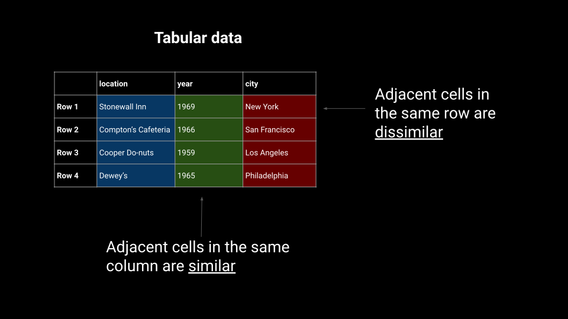

class: center, middle, theme-green <!-- title slide style --> # Apache Arrow: connecting and accelerating dataframe libraries across the PyData ecosystem</title> .boldface[Joris Van den Bossche (Voltron Data)] <!-- author, one line --> .center[.midi[PyCon DE / PyData Berlin, 19 April 2023]] <!-- general info, one line --> <div style="margin-bottom: 40px;"></div> .center[https://jorisvandenbossche.github.io/talks/] <!-- font-size classes (relative to normal 100%) .larger = 200% .large = 130% .midi = 85% .small = 70% .xsmall = 60% .tiny = 50% --> --- ## About me **Joris Van den Bossche** - Background: PhD bio-science engineer, air quality research - Open source enthusiast: core developer of pandas, GeoPandas, Shapely, Apache Arrow, ... - Currently working part-time at Voltron Data on Apache Arrow <div style="margin-bottom:30px; clear: both"></div> .center[ .affiliations[   ] ] .center[ <a href="https://twitter.com/jorisvdbossche" style="color: var(--primary)"><img src="img/icon_twitter.svg" alt="Twitter logo" class="icon"> twitter.com/jorisvdbossche</a> <a href="https://github.com/jorisvandenbossche" style="color: var(--primary)"><img src="img/icon_github.svg" alt="Github logo" class="icon"> github.com/jorisvandenbossche</a> ] .abs-layout.top-1.left-50[  ] --- class: theme-green-minimal ## What is Apache Arrow? > A specification defining a common, language-agnostic <br> > in-memory representation for columnar data <br> > \+ <br> > A multi-language toolbox for accelerated data interchange <br> > and in-memory processing .abs-layout.bottom-1.left-70.width-40[  ] <!-- ## What is Apache Arrow? --> <!-- - Toolbox for in-memory analytics --> <!-- - Toolbox for larger than memory data --> <!-- - Toolbox for connecting languages and hardware --> <!-- - Efficient, performant, open source --> <!-- - Details at [arrow.apache.org](https://arrow.apache.org) --> <!----------------------------------------------------------------------------> --- class: theme-green-minimal ## Accelerating data interchange <p style="margin-bottom: 20px;"><img src="img/data-interchange-1.svg" width="70%"></p> <p style="margin-top: 20px;"><span class="small">Image by Danielle Navarro</span></p> <!----------------------------- SLIDE BREAK -----------------------------> --- class: theme-green-minimal ## Accelerating data interchange <p style="margin-bottom: 20px;"><img src="img/data-interchange-2.svg" width="70%"></p> <p style="margin-top: 20px;"><span class="small">Image by Danielle Navarro</span></p> <!----------------------------- SLIDE BREAK -----------------------------> --- class: theme-green-minimal ## Efficient in-memory processing <p style="margin-bottom: 20px;"></p> <p style="margin-top: 20px;"><span class="small">Image by Danielle Navarro</span></p> --- class: theme-green-minimal ## Efficient in-memory processing <p style="margin-bottom: 20px;"><img src="img/simd-2.svg" width="70%"></p> <p style="margin-top: 20px;"><span class="small">Image by Danielle Navarro</span></p> --- class: theme-green-minimal ## Efficient in-memory processing <p style="margin-bottom: 20px;"><img src="img/simd-3.svg" width="70%"></p> <p style="margin-top: 20px;"><span class="small">Image by Danielle Navarro</span></p> --- class: theme-green-minimal ## Efficient in-memory processing <p style="margin-bottom: 20px;"><img src="img/simd-4.svg" width="70%"></p> <p style="margin-top: 20px;"><span class="small">Image by Danielle Navarro</span></p> --- class: theme-green-minimal ## The Arrow Columnar Format * A specification for in-memory representation of columnar data * Everything in Arrow is based on the Columnar Format * Primitive types: * Integers, floats, booleans, decimals * Binary, utf-8 strings * Dates, times, timestamps, durations, intervals * Composite (nested) types: * List, Struct, Map * Union (dense or sparse) * Optional dictionary or run-end encoding * Nulls encoded as a separate validity bitmap * Extension types: an escape hatch for application-specific data (e.g. Pandas extension types, tensor types, ...) --- class: theme-light-logo ## Arrow has become the de-facto standard Old figure from the start of the project (vision), now a reality <div style="margin-bottom:70px;"></div> .center[   ] ??? used by all those libraries -> but also for you as user if you have your data in Arrow format, you can easily connect with various systems and you can build a modular pipeline you can easily use different tools and languages --- ## Ecosystem of specifications and implementations .center[  ] --- class: theme-light-logo ## Implementations with computational tools Which can be used from Python: * Arrow C++ (Acero) - pyarrow * arrow-rs - datafusion * arrow2 (polars) * Ibis: single interface to those different <br>tools (and more) .abs-layout.top-40.left-60.width-25[  ] .abs-layout.top-70.left-60.width-20[  ] --- class: theme-light-logo ## Arrow-compatible compute engines Systems that do not directly use "Arrow" libraries, but are (very / fully) compatible with Arrow data .abs-layout.top-40.left-15.width-30[  ] .abs-layout.top-45.left-55.width-30[  ] .abs-layout.top-65.left-35.width-30[  ] --- class: theme-light-logo ## Arrow C++ / PyArrow Package with low-level building blocks used throughout the PyData ecosystem * Core implementation: * In-memory data objects (+ conversion to/from Python, numpy, pandas) * IO facilities, IPC serialization, Flight RPC bindings * Basic GPU support for CUDA-enabled devices * Data access services: * Filesystem implementation (local, S3, GCS, HDFS) * File formats (Parquet, Orc, CSV, ND-JSON) * Dataset interface (partitioned, predicate pushdown) * Compute: * Set of built-in compute kernels * Acero streaming execution engine (grouped aggregations, joins, ..) * Substrait integration --- class: theme-light-logo ## Arrow powering pandas * Arrow-backed pandas DataFrames: using PyArrow arrays to store the data of a DataFrame. * Using `pyarrow.compute` to optimize pandas operations See previous "pandas 2.0 and beyond" talk for more details: https://phofl.github.io/pydata-berlin/pydata-berlin-2023/intro.html#1 --- ## Ecosystem of specifications and implementations .center[  ] --- class: theme-green-minimal, center, middle # Arrow C Data interface --- class: theme-green-minimal ## Example: polars to pyarrow ```python >>> import polars as pl >>> df = pl.DataFrame({"foo": [1, 2, 3], "bar": ["a", "b", "c"]}) >>> df ┌─────┬─────┐ │ foo ┆ bar │ │ --- ┆ --- │ │ i64 ┆ str │ ╞═════╪═════╡ │ 1 ┆ a │ │ 2 ┆ b │ │ 3 ┆ c │ └─────┴─────┘ >>> df`.to_arrow()` pyarrow.Table foo: int64 bar: large_string ---- foo: [[1,2,3]] bar: [["a","b","c"]] ``` -- .abs-layout.top-60.left-40.width-50[ .primary[ * Fast, zero-copy conversion * Rust object and C++ object pointing to the same data ]] ??? zero copy conversion, actually sharing the data (both the Rust object and the C++ object point to the same data in memory) That might sound trivial, but this is only possible because of the standardization of the Arrow memory format and C data interface Because this is done without that those two libraries know about each other (at a low level, the method of course imports pyarrow to create the object, but it does not need to bind against the low level Arrow C++ APIs) --- class: theme-green-minimal ## Arrow C Data Interface * Zero-copy data sharing between independent runtimes within the same process (inspired by the Python buffer protocol) * Small set of ABI-stable C definitions * Allows to integrate with the Arrow *format* without necessarily requiring Arrow *software* (either at compile-time or runtime) https://arrow.apache.org/docs/dev/format/CDataInterface.html -- Used by Polars, duckdb, arrow-rs/datafusion, GDAL, xgboost, reticulate and rpy2 (Python<->R), ... --- class: theme-green-minimal ## Arrow C Data Interface ```c struct ArrowArray { // Array data description int64_t length; int64_t null_count; int64_t offset; int64_t n_buffers; int64_t n_children; * const void** buffers; struct ArrowArray** children; struct ArrowArray* dictionary; // Release callback void (*release)(struct ArrowArray*); // Opaque producer-specific data void* private_data; }; ``` \+ definitions for `ArrowSchema` and `ArrowArrayStream` --- class: theme-green-minimal ## Example: GDAL Data Interchange GDAL = widely used library for reading and writing geospatial data formats  --- class: theme-green-minimal ## Example: GDAL Data Interchange with Arrow GDAL = widely used library for reading and writing geospatial data formats  <div style="margin-bottom: -20px;"></div> [RFC 86: Column-oriented read API for vector layers](https://gdal.org/development/rfc/rfc86_column_oriented_api.html) by Even Rouault --- class: theme-green-minimal ## Example: GDAL Data Interchange with Arrow [RFC 86: Column-oriented read API for vector layers](https://gdal.org/development/rfc/rfc86_column_oriented_api.html) by Even Rouault A proposal to output **Arrow C Data interface** structures from GDAL reduces the code required to read a data source to a few lines: ```cpp #include <ogr_api.h> #include <ogrsf_frmts.h> // GDALDataset* poDS = GDALDataset::Open("path/to/file.gpkg"); int read_ogr_stream(GDALDataset* poDS, struct ArrowArrayStream* stream) { OGRLayer* poLayer = poDS->GetLayer(0); OGRLayerH hLayer = OGRLayer::ToHandle(poLayer); return OGR_L_GetArrowStream(hLayer, stream, nullptr); } ``` (It's also 4-10x faster depending on the driver!) ??? (pyogrio -> also rust-based python libraries) --- class: theme-green-minimal ## nanoarrow **Arrow C++** * Produce, convert and transform Arrow arrays (with lots of features) * (depending on build options) ~50 MB static libraries **nanoarrow** (https://github.com/apache/arrow-nanoarrow) * Just produce and convert from/to C types * Tiny size, fast compilation * Copy/paste two files into a project * Helpers for Arrow C Data & Arrow C Stream interfaces -- * Goal: lower the barrier to producing/consuming Arrays in Arrow format More at https://arrow.apache.org/blog/2023/03/07/nanoarrow-0.1.0-release/ --- class: center, middle # Arrow Database Connectivity (ADBC) --- class: theme-light-logo ## Using JDBC / ODBC (or Python DBAPI 2.0) .center[  ] <div style="margin-bottom: -40px;"></div> .small[ .pull-left[ 1. The application submits a SQL query via the JDBC/ODBC API. 2. The query is passed on to the driver. 3. The driver translates the query to a database-specific protocol and sends it to the database. ] .pull-right[ <ol start="4"> <li>The database executes the query and returns the result set in a database-specific format.</li> <li>The driver translates the result into the format required by the JDBC/ODBC API.</li> <li>The application iterates over the result rows using the JDBC/ODBC API.</li> </ol> ] ] -- .pull-both[ JDBC/ODBC are everywhere, but have conversion costs (assume row-oriented data) ] ??? Most Common Interaction with Databases --- class: theme-light-logo ## Using ADBC .center[  ] <div style="margin-bottom: -40px;"></div> .small[ .pull-left[ 1. The application submits a SQL query via the ADBC API. 2. The query is passed on to the ADBC driver. 3. The driver translates the query to a database-specific protocol and sends the query to the database. ] .pull-right[ <ol start="4"> <li>The database executes the query and returns the result set in a database-specific format, which is ideally Arrow data.</li> <li>If needed: the driver translates the result into Arrow data.</li> <li>The application iterates over batches of Arrow data.</li> </ol> ] ] ??? ADBC is an Arrow-based, vendor-neutral API for interacting with databases. Just like JDBC/ODBC, underneath the ADBC API are drivers that translate API for specific databases A driver for an arrow-native database just passes Arrow data through without conversion A driver for a non-Arrow-native database must convert the data to Arrow. This saves the application from having to do that, and the driver can optimize the conversion for its database The application deals only with one API, and only works with Arrow data --- class: theme-light-logo ## Arrow Database Connectivity (ADBC) A single API for getting Apache Arrow data in and out of different databases. * Arrow-native (using the C Data Interface) * Vendor-agnostic (ADBC drivers can implement the API using any underlying protocol) -- ADBC defines a common client API that can be implemented by different drivers (example: Flight SQL, Spark, DuckDB, SQLite, PostgreSQL...) ADBC doesn't intend to replace JDBC or ODBC for general use, just for applications that want bulk columnar data access. https://arrow.apache.org/adbc/ https://arrow.apache.org/blog/2023/01/05/introducing-arrow-adbc/ ??? A columnar, vendor-neutral, minimal-overhead alternative to JDBC/ODBC for analytical applications ADBC allows native database connectivity using Arrow columnar data --- class: theme-light-logo ## ADBC Python drivers .large-code[ ``` pip install adbc_driver_sqlite adbc_driver_postgresql ``` ] Provides a DBAPI 2.0 like interface (but using `fetch_arrow_table` instead of `fetchone`/`fetchall`): ```python import adbc_driver_postgresql.dbapi uri = "postgresql://localhost:5432/postgres?user=postgres&password=password" with adbc_driver_postgresql.dbapi.connect(uri) as conn: with conn.cursor() as cur: cur.execute("SELECT * FROM customer") table = cur.fetch_arrow_table() # Process the results ``` -- Currently initial versions of drivers for SQLite, PostgreSQL, Flight SQL --- class: theme-light-logo ## ADBC Python drivers Avoiding the overhead of row-by-row conversion to DataFrame: ```python df = pd.DataFrame({"ints": np.arange(1_000_000), "floats": np.random.randn(1_000_000)}) df.to_sql("test_table", "sqlite:///db.sqlite", index=False) ``` ```python %timeit pd.read_sql("SELECT * FROM test_table;", "sqlite:///db.sqlite") # 1.87 s ± 17 ms per loop (mean ± std. dev. of 7 runs, 1 loop each) ``` ```python %%timeit import adbc_driver_sqlite.dbapi with adbc_driver_sqlite.dbapi.connect("file:db.sqlite") as conn: with conn.cursor() as cur: cur.execute("SELECT * FROM test_table") table = cur.fetch_arrow_table() # 150 ms ± 2.15 ms per loop (mean ± std. dev. of 7 runs, 10 loops each) ``` --- class: theme-light-logo ## Arrow and Substrait .pull-left[ .center[  **Apache Arrow**<br> a universal standard for representing tabular data ] ] .pull-right[ .center[  **Substrait**<br> a universal standard for representing relational operations ] ] <div style="margin-bottom: 100px;"></div> .center[ https://substrait.io/ ] ??? These two standards are important for us because they will enable modularity and composability in the data analytics ecosystem. These two standards will enable users to pick a language, pick a query engine, pick a storage system and have them all work well together with excellent performance. We want users to be able to mix and match, and trust that their workloads are portable. That's the antidote to vendor lock-in, data silos, and technology silos. --- class: theme-light-logo ## Arrow and Substrait .center[  ] --- class: theme-green-maximal ## Thanks for listening! Questions? Those slides: - https://github.com/jorisvandenbossche/talks/ - http://jorisvandenbossche.github.io/talks/2023_PyDataBerlin_Arrow .center[ <a href="https://twitter.com/jorisvdbossche" style="color: var(--text-white)"><img src="img/icon_twitter.svg" alt="Twitter logo" class="icon"> twitter.com/jorisvdbossche</a> <a href="https://github.com/jorisvandenbossche" style="color: var(--text-white)"><img src="img/icon_github.svg" alt="Github logo" class="icon"> github.com/jorisvandenbossche</a> ]